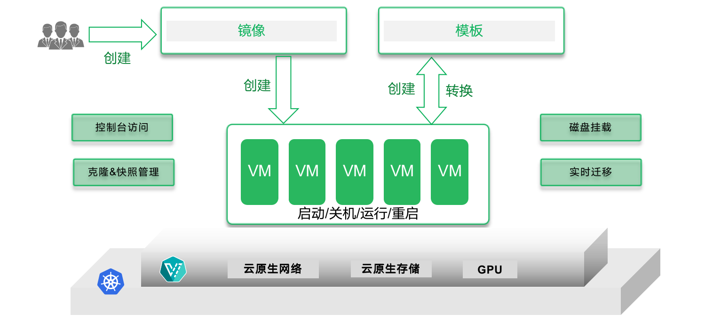

DaoCloud Enterprise 5.0¶
DaoCloud Enterprise 5.0 (DCE 5.0) 是一款高性能、可扩展的云原生操作系统。 它能够在任何基础设施和任意环境中提供一致、稳定的体验，支持异构云、边缘云和多云编排。 DCE 5.0 集成了最新的服务网格和微服务技术，能够跟踪每一个流量的生发始终， 帮助您洞察集群、节点、应用和服务的详细指标，并通过动态仪表盘和拓扑大图可视化掌握应用健康状态。
DCE 5.0 原生支持 DevOps 开发运维模式，可以实现应用交付的全流程标准化和自动化，并集成各类精选数据库和中间件，使运维治理更加高效。 各个产品模块独立解耦，支持灵活升级，对业务没有影响，并且能够与众多云原生生态产品对接，提供完整的解决方案体系。 它经过了近千家行业客户的生产场景检验，构建了坚实、可靠的数字底座，帮助企业定义数字边界，释放云原生生产力。
- :fontawesome-solid-jet-fighter-up: 安装 详尽的安装教程
- :material-microsoft-azure-devops: 应用工作台 CI/CD 流水线
- :octicons-container-16: 容器管理 集群/节点/负载等基础设施
- :material-cloud-check: 多云编排 多云实例/负载/策略
- :material-warehouse: 镜像仓库 镜像集成和托管服务
- :material-dot-net: 云原生网络 多 CNI 融合方案
- :simple-googlecloudstorage: 云原生存储 容器化存储综合方案
- :material-train-car-container: 虚拟机 容器化的虚拟机
- :material-monitor-dashboard: 可观测性 一站式图形化仪表盘
- :material-engine: 微服务引擎 微服务治理中心和网关
- :material-table-refresh: 服务网格 非侵入式服务治理
- :material-middleware: 中间件 ES, Kafka, MinIO, MySQL 等
- :material-slot-machine: AI Lab 云原生 AI - 训推一体化平台
- :fontawesome-brands-edge: 云边协同 容器能力扩展至边缘
- :fontawesome-solid-user-group: 全局管理 设置登录/访问权限/外观
- :material-download: 下载中心 下载各模块离线包
- :simple-youtubestudio: 最佳实践 实践出真知
- :material-frequently-asked-questions: 常见问题 答疑解惑排查故障
- 免费体验 :free:

DCE 5.0 云原生操作系统提供了 9 大能力，自由搭配各种模块，可以应对海量应用场景。
这些模块就像乐高搭积木一样，糅合社区最优秀的几十种开源技术，经过众多辩证选型、攻坚克难、编码调试、海量测试，“十年磨一剑，一朝试锋芒”，全新搭建的新一代容器化平台能够满足企业上云的各类场景需求。
提供云原生计算、网络、存储等能力，兼容各种集群接入，支持集群从部署、版本升级、证书变更、配置变更、回收等全生命周期管理，突破 K8s API 性能瓶颈，实现企业超大规模用户并发使用多集群。 针对企业环境，提供场景化的网络方案，实现当前企业网络基础设施复用的最大化，降低企业使用云原生应用门槛。
- 云原生计算内核：抽象底层基础设施，为上层应用及其它模块提供计算、存储等强大内核能力。
- 云原生网络内核：适配 overlay、underlay 等网络环境，支持 Spiderpool、Cillium、Macvlan、Multus 等多种网络模式
- 云原生安全内核：融合 RBAC 权限认证体系，为运维安全保驾护航

支持多云和混合云的统一集中管理，提供跨云资源检索及跨云的应用部署、发布和运维能力，实现多云应用高效管控，提供基于集群资源的应用弹性扩缩，实现全局负载均衡，具备故障恢复能力，有效解决多云应用灾备问题，助力企业构建多云、混合云的数字基础设施。
涉及的模块：全局管理、容器管理、云原生网络、云原生存储、信创异构
多云应用的跨区域/集群分发机制如下：

专为有状态应用设计的云原生本地存储能力，满足中间件高 I/O 的存储需求，提升运维管理效率。精选各类数据库、分布式消息和日志检索等中间件， 提供多租户、部署、观测、备份、运维操作等全生命周期的中 间件管理能力，实现数据服务的自助化申请、弹性扩展、 高并发处理和稳定高可用。
涉及的模块：全局管理、容器管理、云原生网络、云原生存储、精选中间件

提供非侵入式流量治理功能，支持无感接入传统微服务、云原生微服务和开源微服务框架，实现企业现有微服务体系及新旧微服务体系的融合治理， 支持微服务从开发、部署、接入、观测、运维的全生命周期管理，提供高性能云原生微服务网关，保证微服务应用的连续可用性；引入自主开源的 eBPF 网格加速技术，全面提高流量转发效率。
涉及的模块：全局管理、容器管理、微服务治理、服务网格、可观测性、应用工作台、云原生网络、云原生存储

基于日志、链路、指标、eBPF 等技术手段，全面采集服务数据，深入获取请求链路信息，动态观测、多维度掌控集群、节点、应用和服务的实时变化， 通过统一控制面实现所有集群及负载观测数据的查询，引入拓扑分析技术可视化掌握应用健康状态，实现秒级故障定位。
涉及的模块：全局管理、容器管理、可观测性、云原生网络、云原生存储

收录来自大数据、AI、中间件等十大领域生态伙伴的软件产品，实现生态技术、产品、运营服务等能力的整合，提供开箱即用的生态应用软件，面向企业实际业务需求，打造完整的解决方案体系。
通过一致性可推广的应用交付流程实现自助式上云，支持柔性租户体系，动态适配用户组织架构规划和实时资源分配，基于云原生化的 CI/CD 流水线，集成丰富的工具链并支持流水线高效并发执行流转， 自动化完成应用的构建、部署，创新性引入 Gitops、渐进式交付能力体系，实现应用更精细的管理运维。
涉及的模块：全局管理、容器管理、应用工作台、云原生网络、云原生存储、镜像仓库

采用信创云原生技术架构，兼容国产芯片及服务器，支持信创操作系统及信创应用生态体系，屏蔽底层异构基础设施的复杂性，把传统操作系统从需要长期积累的软件生态兼容适配中解放出来， 实现混合异构集群的灵活调度，保证信创应用运行环境的稳定高可靠，助力信创进程进一步提速。
涉及的模块：全局管理、容器管理、集群生命周期管理、信创中间件、云原生网络、云原生存储

将云原生能力延伸至边缘，采用边缘集群、边缘节点模式，将数据中心算力下移，端设备算力上移，统一管控和调度离散、异构的计算资源，解决在海量边、端设备上统一完成大规模应用交付、运维、管控的诉求，实现云边的真正一体化。
涉及的模块：全局管理、容器管理、云原生网络、云原生存储、云边协同、弱网集群

基于 KubeVirt 技术将虚拟机作为云原生应用进行管理，与容器无缝地衔接在一起，使用户能够轻松地实现虚拟机本身的全生命周期管理、虚拟机的快照、恢复、克隆、热迁移等能力，享受与容器应用一致的丝滑体验。

在成功获取许可证授权后，首次登录 DCE 5.0 将会呈现一个仪表盘。 该仪表盘以直观的方式展示了各种信息，包括正在运行的容器和 Pod、CPU 和内存使用情况、集群/节点/Pod 的健康状态、告警信息、资源利用情况以及功能一览等内容。

下载 DCE 5.0 安装 DCE 5.0 申请社区免费体验